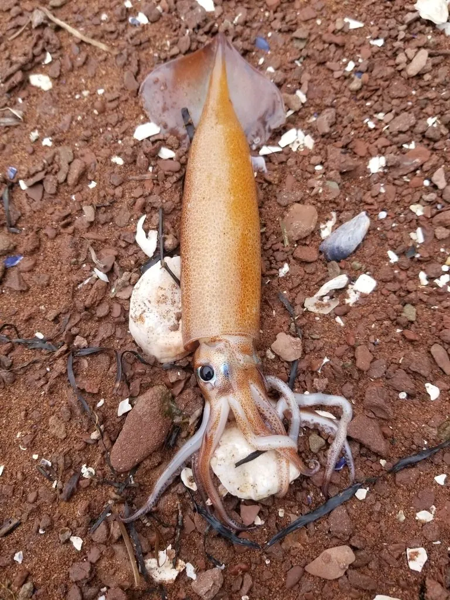

软体动物 · 动物界
阿根廷滑柔鱼 Illex argentinus

胴体细长、鳍呈三角形的中型柔鱼，生活在西南大西洋大陆架，一年生并作季节性洄游，是世界重要的鱿钓渔业对象。
- 分类
- 门软体动物门纲头足纲目枪形目科柔鱼科属滑柔鱼属
- 栖息环境
- 西南大西洋水深五十至三百米的大陆架与陆坡，随季节南北洄游
- 地理分布
- 西南大西洋巴西、乌拉圭至阿根廷沿岸的大陆架海域
- 保护级别
- 尚无保护级别；资源量受气候波动与捕捞强度影响
物种志
阿根廷滑柔鱼的胴长通常二十至三十厘米，胴体细长呈圆筒形，后端收窄，鳍呈三角形，位于胴体末端，两鳍相接呈菱形。它的体色淡褐至灰褐，体表散布细小的橙褐色斑点，皮肤薄而光滑，触腕上的吸盘有角质齿环。雄体比雌体小，成熟时腕足特化出交接腕。
它分布于西南大西洋的巴西、乌拉圭至阿根廷沿岸，主要集中在水深五十至三百米的大陆架和陆坡，适温范围较窄，随季节在南北之间作洄游，夏季在高纬度海域肥育，冬季回到较低纬度产卵。它是短寿命种类，寿命约一年，产卵后亲体死亡。它以磷虾、小鱼和其他头足类为食，本身又是金枪鱼、海鸟和鲸类的重要饵料。它是世界上产量最大的鱿鱼渔业之一，中国远洋鱿钓船队常年在该海域作业，目前尚无保护级别，但资源量受气候波动和捕捞强度影响明显。
形态与习性
- 胴长通常二十至三十厘米，细长圆筒形
- 鳍三角形，位于胴体末端，两鳍相接呈菱形
- 栖息水层水深五十至三百米的大陆架与陆坡
- 洄游随季节南北移动，夏季高纬肥育、冬季低纬产卵
- 寿命约一年，产卵后亲体死亡
- 渔业世界产量最大的鱿鱼渔业之一
趣味知识
- 它一辈子只有一年，长大、洄游、产卵，然后死在海里。
- 它的鳍在尾端拼成一个菱形，游动时像一枚小火箭的尾翼。
- 中国远洋鱿钓船每年远赴西南大西洋，追的就是这一群。